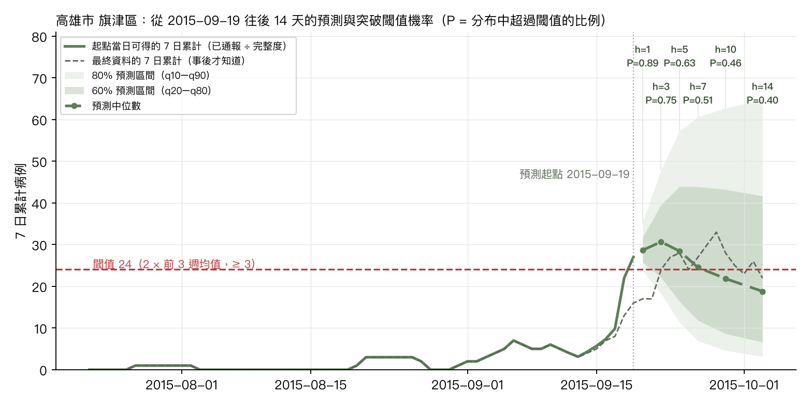
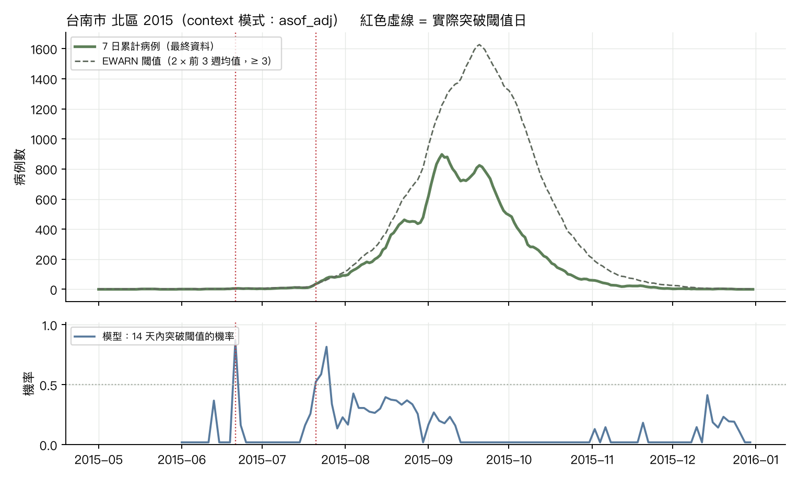
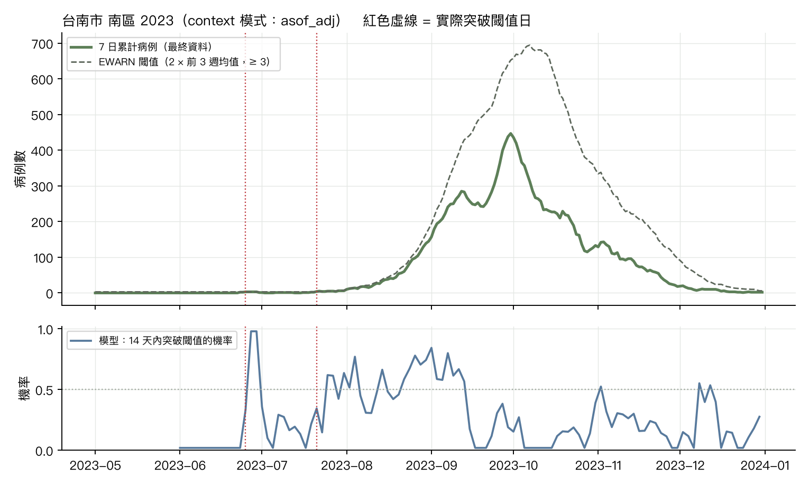

登革熱鄉鎮層級預測式預警：TimesFM 3.0 在承平期資料上的驗證
對應 CHG 情境一（複合災難下收容所自報的離線早期警示）第一至二年的驗證工作：以疾管署登革熱每日確定病例，模擬「小區域、每日、低計數」的症候群序列，檢驗時序基礎模型能否在 WHO EWARN 靜態閾值被突破之前數天、帶著不確定區間發出預警。本頁說明資料、方法、模型輸出的讀法、驗證結果與應用情境。
要回答的問題
From scenario to testable question情境一的要求
- 收容所層級、每日、低計數且零膨脹的症候群序列，離線可用。
- 不只判定「現在是否超標」，而是前瞻 N 天、帶不確定區間地預測「是否即將突破流行閾值」。
- 比 WHO EWARN 的靜態規則（達前 3 週均值兩倍）更早，且假警報可控；校準衰退時要能降級。
承平期的替代驗證
- 以「鄉鎮 × 日」的登革熱本土確定病例模擬「收容所 × 日」，涵蓋 2014 高雄、2015 台南高雄、2023 台南三次大流行與三個平靜年。
- 目標 = 7 日累計病例；閾值 = max(2 × 前 3 週週均值, 3 例)。事件 = 未來 14 天內 7 日累計 ≥ 起點閾值。
- 誠實回測：用通報日重建每個起點「當日可得」的資料，並比較有無通報完整度校正。
資料與方法
Data & method| 資料 | 疾管署「登革熱 1998 年起每日確定病例統計」個案檔（發病日、通報日、居住鄉鎮、本土/境外）。公開平台已於 2026 年 3 月下架，使用 Internet Archive 保存的官方檔案（發病日至 2025-07-23）。 |
| 面板 | 台南 37 區、高雄 38 區中 2012 年起有本土病例的 74 區 × 日；同時建立「發病日 × 通報延遲」直方圖，通報延遲中位數 2 天、第 95 百分位 7 天，起點當日近 7 天約僅 68% 完整。 |
| 三種 context 模式 | final：用最終資料（無延遲，樂觀上限）；asof：只用起點當日已通報者（誠實但尾端偏低）；asof_adj：as-of 除以歷史通報完整度（下限 0.2），是實務可行的版本。 |
| 模型 | TimesFM 3.0 零樣本，單變量批次，context 2 年，horizon 1–14 天，輸出 9 個分位數；基準 last-value naive、季節性 naive（364 天）；偵測器 EWARN 靜態規則、EWMA、CUSUM。 |
| 評估 | 分布：WIS（近似 CRPS）、80% 涵蓋率。警示：事件 vs 機率的 AUC；p* 掃描下的敏感度、每 100 鄉鎮週假警報、PPV（鄉鎮週層級）；前置時間 = 事件前 14 天內最早警示到突破日的天數；配對比較 = 在不高於偵測器假警報率的 p* 下比較。 |
模型輸出是什麼、怎麼讀
How to read the output一個起點的完整輸出：高雄市 旗津區，2015-09-19（實際突破日 2015-09-22）

| h（天） | 目標日 | 中位數 | 80% 區間 | P(≥ 閾值 24) | 事後實際 |
|---|---|---|---|---|---|
| 1 | 2015-09-20 | 29 | 24–35 | 0.89 | 17 |
| 3 | 2015-09-22 | 31 | 18–48 | 0.75 | 24 |
| 5 | 2015-09-24 | 28 | 11–57 | 0.63 | 28 |
| 7 | 2015-09-26 | 24 | 7–61 | 0.51 | 27 |
| 10 | 2015-09-29 | 22 | 5–63 | 0.46 | 28 |
| 14 | 2015-10-03 | 19 | 3–65 | 0.40 | 22 |
讀圖四步
- 先看區間，不看單點。模型輸出的是分布：中位數是「一半機會比它高、一半比它低」，60%/80% 區間表示大部分可能的範圍。區間寬代表不確定，是資訊不是缺陷。
- 機率 = 分布超過閾值的比例。每個 horizon 的 P(≥ 閾值) 由分位數內插而得；頁面與儀表板用的是 14 天內的最大值，代表「這兩週內任一時點突破」的機率。
- p* 是行動門檻，不是模型參數。機率 ≥ p* 才發警示；p* 越低越早、越敏感，但假警報越多。第 6 節把 p* 換成每週查證單數量，由防疫單位選。
- 前置時間才是價值。EWARN 規則在突破當天才知道；模型在事件前幾天就把機率拉高，這段時間就是病媒防治、隔離空間與 ORS 整備的時間。
三種資料狀態的意義
- final 是理論上限：假設所有病例當天就通報。實務上不存在。
- asof 是災難現場真正看到的樣子：最近幾天永遠偏低。直接餵給模型，它會把「通報未齊」誤讀成「疫情下降」，前置時間幾乎歸零（見第 4 節）。
- asof_adj 用歷史完整度把最近幾天放大回估計值，是一種簡單的 nowcast。這一步讓 AUC 從 0.87 回到 0.89、前置時間回到 4 天，是部署時的必要元件；文件裡的「分布位移偵測 → 降級」也應以完整度異常為第一個觸發條件。
- 閾值本身是反應式的：疫情爆發後閾值隨之升高、遠在病例之上，因此事件集中在流行「起始」與「加速」時刻，這正是 EWARN 想抓的時點。
驗證結果
Results7 日累計的 WIS 依 horizon
校準：預測機率 vs 實際發生比例（asof_adj，逐起點）
| 版本 | Brier | Log loss | ECE | AUC |
|---|---|---|---|---|
| 原始機率 | 0.0576 | 0.216 | 0.019 | 0.829 |
| 等張回歸（留一年） | 0.0583 | 0.255 | 0.014 | 0.737 |
| Platt（留一年） | 0.0581 | 0.221 | 0.012 | 0.657 |
結論：原始機率直接可用（ECE 0.02）；重校準的地圖無法跨流行季轉移（各年事件率 0%–19%），部署時改為監測校準是否衰退，而非重新映射。
p* 取捨：敏感度
p* 取捨：每 100 鄉鎮週假警報
| context 模式 | WIS h=7 TimesFM | naive | 季節性 naive | 大流行年 TimesFM / naive | 80% 涵蓋（h=7） | AUC TimesFM / naive |
|---|---|---|---|---|---|---|
| asof_adj（已通報 ÷ 通報完整度） | 2.33 | 2.93 | 9.77 | 4.64 / 5.82 | 0.87 | 0.89 / 0.76 |
| final（最終資料，無通報延遲） | 1.53 | 2.02 | 9.77 | 3.03 / 4.00 | 0.88 | 0.93 / 0.74 |
| asof（僅起點當日已通報） | 2.42 | 2.54 | 9.78 | 4.81 / 5.04 | 0.86 | 0.87 / 0.71 |
前置時間：偵測到的事件比例
前置時間中位數（天）
| 方法 | 偵測到的事件比例 | 前置中位數（天） | 前置 ≥ 3 天 |
|---|---|---|---|
| EWARN 靜態規則 | 1.00 | 0.0 | 0.00 |
| EWMA | 0.12 | 2.0 | 0.04 |
| CUSUM | 0.52 | 1.0 | 0.19 |
| TimesFM final p*=0.3 | 0.55 | 5.0 | 0.41 |
| TimesFM final p*=0.5 | 0.31 | 4.0 | 0.22 |
| TimesFM final p*=0.7 | 0.11 | 2.0 | 0.05 |
| TimesFM asof p*=0.3 | 0.25 | 11.5 | 0.19 |
| TimesFM asof p*=0.5 | 0.08 | 6.0 | 0.07 |
| TimesFM asof p*=0.7 | 0.01 | 7.0 | 0.01 |
| TimesFM asof_adj p*=0.3 | 0.50 | 5.0 | 0.35 |
| TimesFM asof_adj p*=0.5 | 0.34 | 4.0 | 0.21 |
| TimesFM asof_adj p*=0.7 | 0.18 | 3.0 | 0.11 |
配對比較。在不高於 CUSUM 假警報率（4.26/100 鄉鎮週）的 p* 下，TimesFM（asof_adj，p* = 0.4）偵測 0.44 的事件、前置中位數 4 天；CUSUM 偵測 0.52、前置 1 天。在不高於 EWMA 假警報率（1.43）下，模型 p* = 0.6：偵測 0.27、前置 3 天；EWMA 偵測 0.12、前置 2 天。模型的價值主要在「提前幾天」，偵測比例與 CUSUM 相近。
案例
Case studies台南市 北區 2015：史上最大流行

台南市 南區 2023：2015 後最大流行

兩個案例都顯示：流行起始前的兩次突破，模型機率在突破前數天已拉高；疫情高峰後閾值遠高於病例數（反應式規則的特性），不再有事件，模型機率也回落。
應用情境與工作量
Operational use從機率到行動
- 邊緘節點每日更新各收容所（此處為鄉鎮）的 7 日累計序列，先做通報完整度校正，再由模型輸出 14 天的分位數。
- 換算「14 天內突破閾值的機率」；兩級門檻：注意（p* 低，只在儀表板標示）與警示（p* 高，產生查證工作單）。
- 警示不自動觸發行動：工作單預填原始通報資料，推送給區級 focal point，依 EWARN 在 24 小時內查證。
- 失效防護：若通報完整度異常（例如災後通報中斷）、機率校準偏離（第 4 節校準圖）或 context 分布位移，系統降級為 EWARN/EWMA 規則並強制人工覆核。
兩級門檻的工作量表（asof_adj 原始機率；示例：一個轄區 20 個站點）
| 注意 p | 警示 p | 注意/週 | 警示單/週 | 其中假 | 注意敏感度 | 警示敏感度 | 警示 PPV | 警示偵測事件 | 警示前置 | 先有注意 | 注意→警示天 |
|---|---|---|---|---|---|---|---|---|---|---|---|
| 0.2 | 0.4 | 2.6 | 1.3 | 0.6 | 0.65 | 0.43 | 0.58 | 0.44 | 4.0 | 0.27 | 6.0 |
| 0.2 | 0.5 | 2.6 | 1.0 | 0.4 | 0.65 | 0.34 | 0.64 | 0.34 | 4.0 | 0.34 | 6.0 |
| 0.2 | 0.6 | 2.6 | 0.7 | 0.2 | 0.65 | 0.26 | 0.67 | 0.27 | 3.0 | 0.41 | 6.0 |
| 0.3 | 0.4 | 1.9 | 1.3 | 0.6 | 0.53 | 0.43 | 0.58 | 0.44 | 4.0 | 0.21 | 4.0 |
| 0.3 | 0.5 | 1.9 | 1.0 | 0.4 | 0.53 | 0.34 | 0.64 | 0.34 | 4.0 | 0.29 | 4.0 |
| 0.3 | 0.6 | 1.9 | 0.7 | 0.2 | 0.53 | 0.26 | 0.67 | 0.27 | 3.0 | 0.34 | 4.0 |
| 0.4 | 0.5 | 1.3 | 1.0 | 0.4 | 0.43 | 0.34 | 0.64 | 0.34 | 4.0 | 0.12 | 2.0 |
| 0.4 | 0.6 | 1.3 | 0.7 | 0.2 | 0.43 | 0.26 | 0.67 | 0.27 | 3.0 | 0.23 | 4.0 |
建議起點：注意 0.3 / 警示 0.5。20 站的轄區每週約 1.9 個注意標示、1.0 張查證單（其中約 0.4 張為假警報）；警示層偵測 0.34 的事件、前置中位數 4 天，注意層偵測 0.50、前置 5 天。有警示的事件中 0.29 先出現注意標示，兩者相隔中位數 4 天，注意層因此是給 focal point 預先關注的前哨。
| C / L | 預設 p* | 敏感度 | 假警報/100 週 | PPV | 偵測事件 | 前置中位數 |
|---|---|---|---|---|---|---|
| 0.1 | 0.1 | 0.76 | 13.1 | 0.36 | 0.71 | 11.0 |
| 0.2 | 0.2 | 0.65 | 8.2 | 0.44 | 0.61 | 8.0 |
| 0.3 | 0.3 | 0.53 | 5.1 | 0.50 | 0.50 | 5.0 |
| 0.5 | 0.5 | 0.34 | 1.9 | 0.64 | 0.34 | 4.0 |
成本損失法：p* = 一次查證成本 C ÷ 漏報損失 L。C/L = 0.1 代表「查證 10 次的成本才等於漏掉一次群聚」，門檻低、寧可多查；C/L = 0.5 則只在機率過半時才查。
限制與下一步
Limits & next限制
- 用的是確定病例，不是情境一的自報症候群；病例數量級與雜訊都不同。
- 閾值以起點時的 EWARN 規則定義，事件集中在大流行年（226 個事件中絕大多數在 2014、2015、2023），平靜年幾乎沒有事件可評估敏感度。
- 機率略保守、區間略寬（80% 涵蓋率約 0.87）；可做機率校準再用。
- TimesFM 3.0 為非商業授權且 330M 參數，邊緣端需蒸餾或改用 2.5；本頁只驗證「基礎模型層」的價值。
下一步
- 機率校準與兩級門檻工作量表已完成（04、06 節）：原始機率直接使用、建議注意 0.3 / 警示 0.5；下一步把工作量表拆成大流行年與平靜年兩欄。
- 同城市鄉鎮的多變量聯合預測、鄰區病例與雨量作為共變數。
- Farrington flexible 基準；每日起點；另一種「群聚起始」事件定義（7 日累計 ≥ 3 且前 14 天為 0）。
- 把同一流程套到週層級的急性腹瀉、腸病毒、類流感（RODS），完成情境一四類症候群。